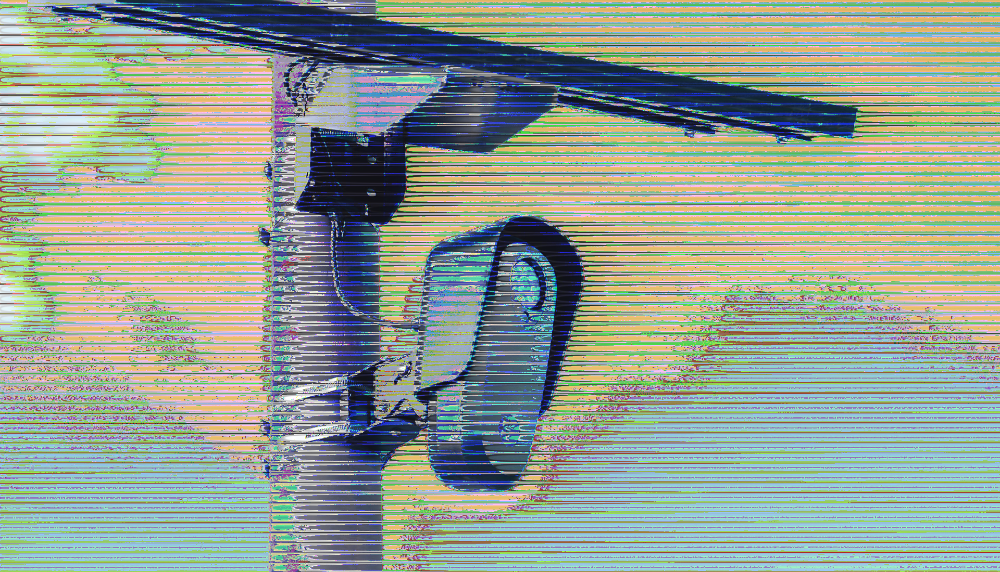
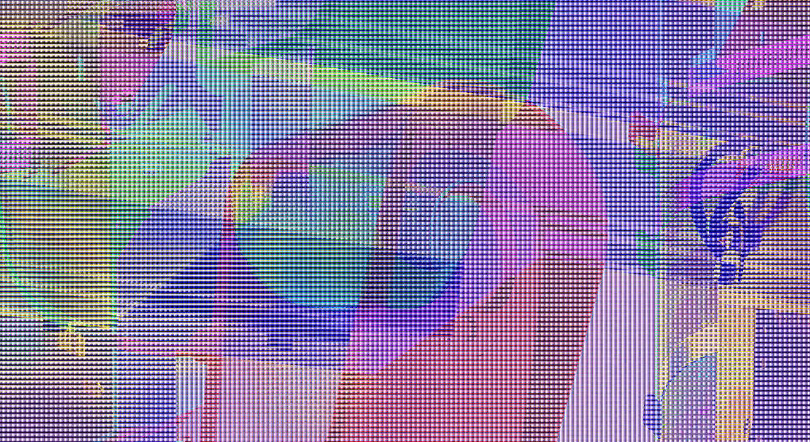

This series uses data bending and data moshing to depict glitched and distorted flock cameras. It is a reflection on the sinister uses of the technology, its proliferation, and how its use distorts the idea of security.

